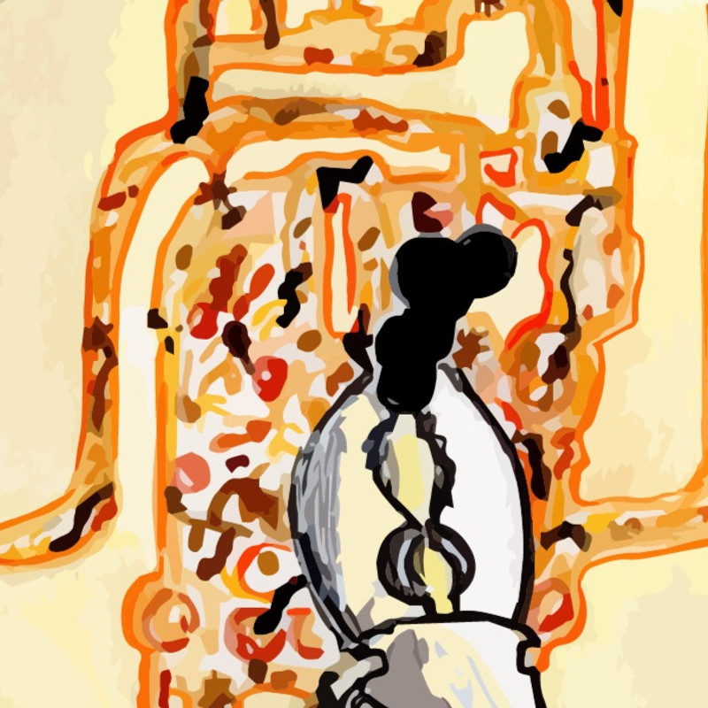
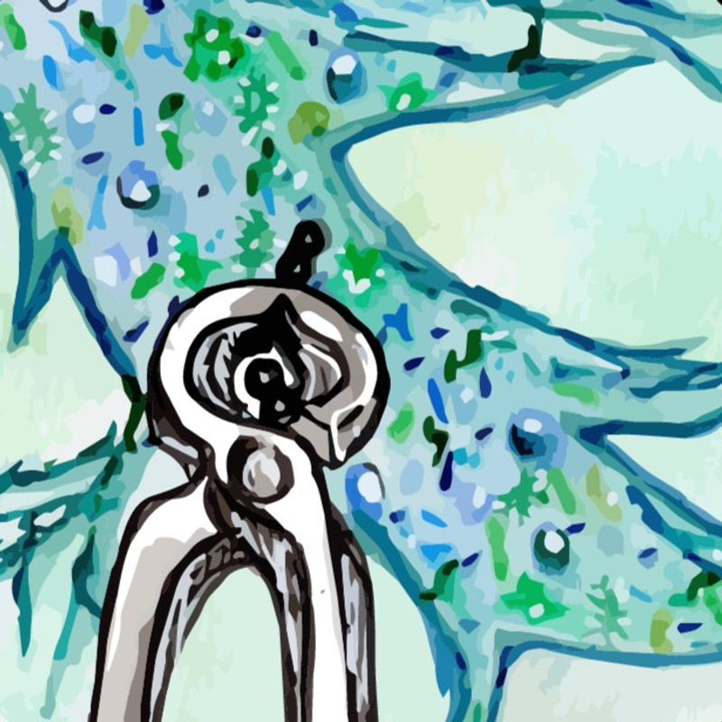
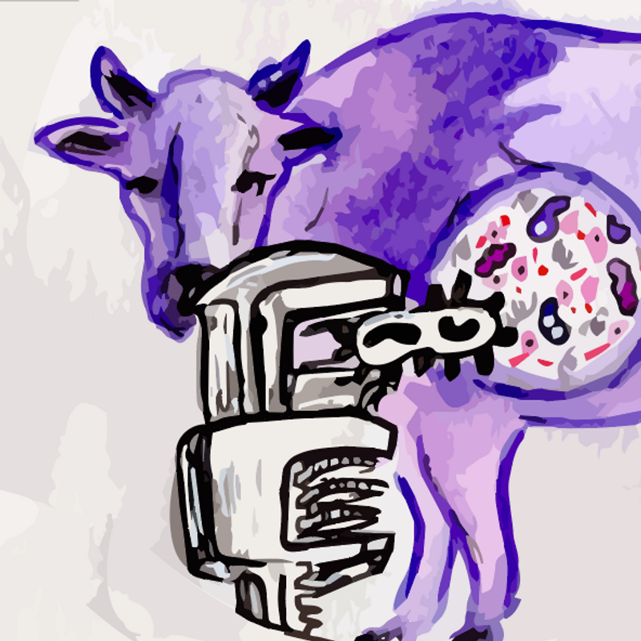
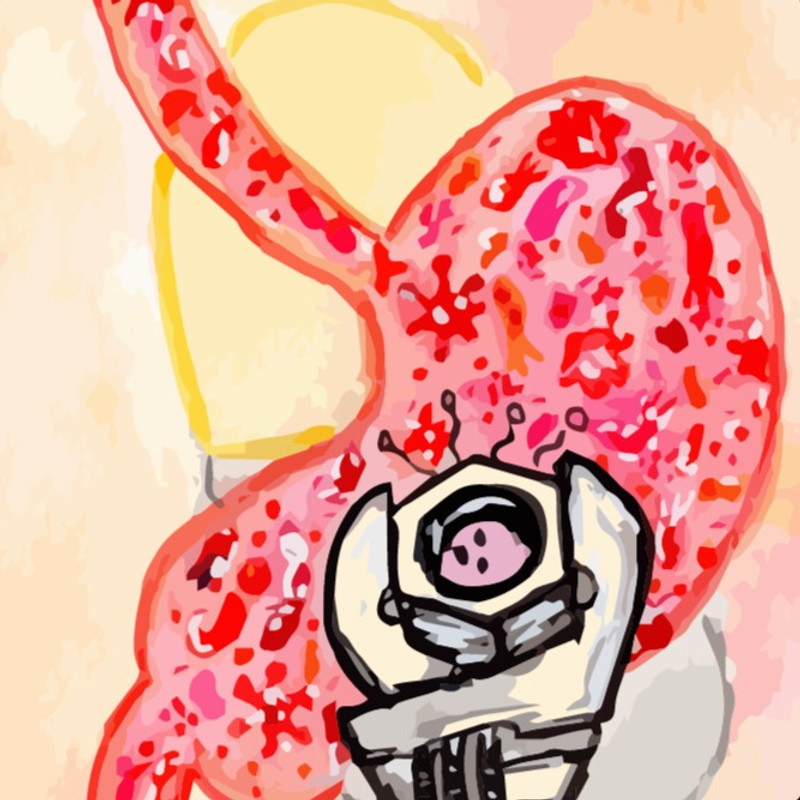
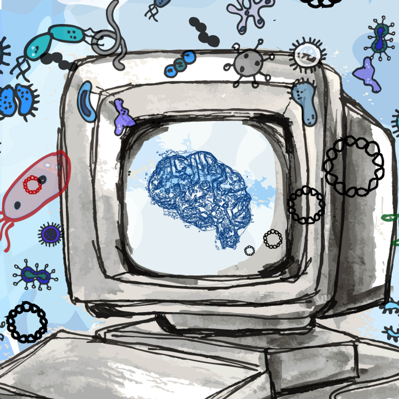

Biodegradation & Production Microbiomes
Engineering microbial communities for sustainable biodegradation and bioproduction applications.
Learn moreInnovative Genomics Institute | UC Berkeley
Pioneering microbiome editing — combining synthetic biology, CRISPR genome editing, and machine learning / AI to edit the DNA of microbial communities for environmental sustainability, agriculture, and human health.
Explore Our Research
We combine synthetic biology, CRISPR-based genome editing, microbiology, and machine learning / AI to make targeted DNA-level edits to microbial communities for understanding and control.

Engineering microbial communities for sustainable biodegradation and bioproduction applications.
Learn more
Developing precision tools to modify soil microbiomes for improved agricultural outcomes.
Learn more
Targeting rumen microbiomes to decrease methane emissions from livestock through precision editing.
Learn more
Editing gut microbiomes to improve human health outcomes and treat microbiome-associated diseases.
Learn more
Leveraging AI and machine learning to develop next-generation microbiome editing technologies.
Learn more
Congratulations to our graduate student (now PhD candidate!) Leo on passing his qualifying exams with flying colors!
Read more →
We celebrate Sarah's last day in the lab as our wonderful lab manager before she starts her next chapter as a research associate in the Busch Lab at the Salk Institute.
Read more →
Amanda and Leo's work on CRISPR-associated transposon regulators has been published in Science Advances.
Read more →